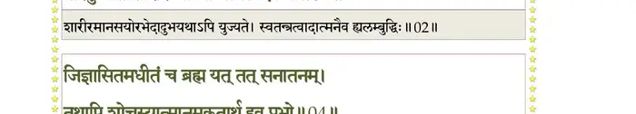
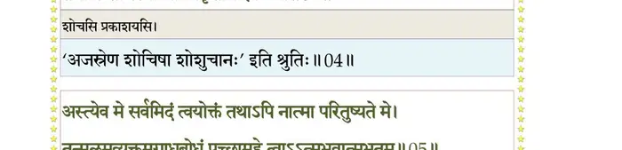
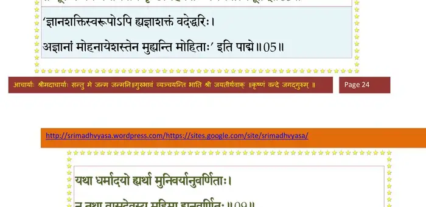
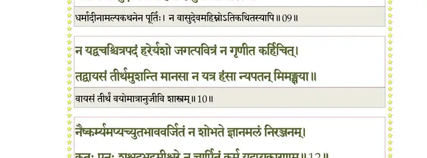
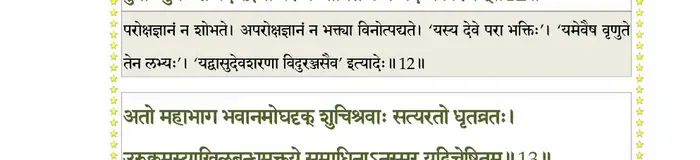
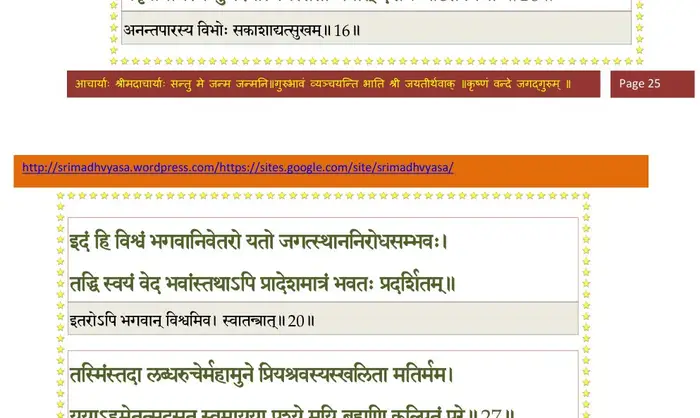
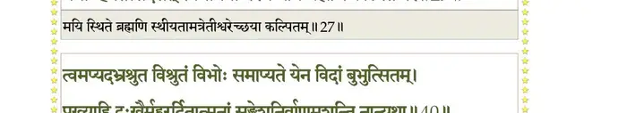
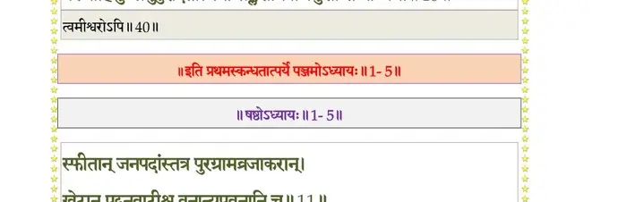

स्कन्ध 1 · अध्याय 5
श्लोक १
सूत उवाच–
अथ तं सुखमासीन उपासीनं बृहच्छ्रवाः ।
देवर्षिः प्राह विप्रर्षिं वीणापाणिः स्मयन्निव।। १ ।।
अथ तं सुखमासीन उपासीनं बृहच्छ्रवाः ।
देवर्षिः प्राह विप्रर्षिं वीणापाणिः स्मयन्निव।। १ ।।
श्लोक २
नारद उवाच–
पाराशर्य महाभाग भवतः कच्चिदात्मना ।
परितुष्यति शारीर आत्मा मानस एव वा।। २ ।।
पाराशर्य महाभाग भवतः कच्चिदात्मना ।
परितुष्यति शारीर आत्मा मानस एव वा।। २ ।।
भागवततात्पर्यनिर्णय

श्लोक ३
जिज्ञासितं सुसंपन्नमपि ते महदद्भुतम् ।
कृतवान् भारतं यस्त्वं सर्वार्थपरिबृंहितम्।। ३ ।।
कृतवान् भारतं यस्त्वं सर्वार्थपरिबृंहितम्।। ३ ।।
श्लोक ४
जिज्ञासितमधीतञ्च ब्रह्म यत्तत्सनातनम् ।
तथापि शोचस्यात्मानमकृतार्थ इव प्रभो।। ४ ।।
तथापि शोचस्यात्मानमकृतार्थ इव प्रभो।। ४ ।।
भागवततात्पर्यनिर्णय

श्लोक ५
व्यास उवाच–
अस्त्येव मे सर्वमिदं त्वयोक्तं तथापि नात्मा परितुष्यते मे ।
तत्मूलमव्यक्तमगाधबोधं पृच्छामहे त्वाऽऽत्मभवात्मभूतम्।। ५ ।।
अस्त्येव मे सर्वमिदं त्वयोक्तं तथापि नात्मा परितुष्यते मे ।
तत्मूलमव्यक्तमगाधबोधं पृच्छामहे त्वाऽऽत्मभवात्मभूतम्।। ५ ।।
भागवततात्पर्यनिर्णय

श्लोक ६
स वै भवान् वेदसमस्तगुह्यं उपासितो यः पुरुषः पुराणः ।
परावरेशो मनसैव विश्वं सृजत्यवत्यत्ति गुणैरसङ्गः।। ६ ।।
परावरेशो मनसैव विश्वं सृजत्यवत्यत्ति गुणैरसङ्गः।। ६ ।।
श्लोक ७
त्वं पर्यटन्नर्क इव त्रिलोकीमन्तश्चरो वायुरिवात्मसाक्षी ।
परावरे ब्रह्मणि धर्मतो व्रतैस्स्नातस्य मे न्यूनमलं विचक्ष्व।। ७ ।।
परावरे ब्रह्मणि धर्मतो व्रतैस्स्नातस्य मे न्यूनमलं विचक्ष्व।। ७ ।।
श्लोक ८
नारद उवाच–
भवताऽनुदितप्रायं यशो भगवतोऽमलम् ।
येनैवासौ न तुष्येत मन्ये तद्दर्शनं खिलम्।। ८ ।।
भवताऽनुदितप्रायं यशो भगवतोऽमलम् ।
येनैवासौ न तुष्येत मन्ये तद्दर्शनं खिलम्।। ८ ।।
श्लोक ९
यथा धर्मादयो ह्यर्था मुनिवर्यानुवर्णिताः ।
न तथा वासुदेवस्य महिमा ह्यनुवर्णितः।। ९ ।।
न तथा वासुदेवस्य महिमा ह्यनुवर्णितः।। ९ ।।
भागवततात्पर्यनिर्णय

श्लोक १०
न १तद्वचश्चित्रपदं हरेर्यशो जगत्पवित्रं न गृणीत कर्हिचित् ।
तद्वायसं तीर्थमुशन्ति मानसा न यत्र हंसा न्यपतन्मिमंक्षया।।१०।।
तद्वायसं तीर्थमुशन्ति मानसा न यत्र हंसा न्यपतन्मिमंक्षया।।१०।।
श्लोक ११
स वाग्विसर्गो जनताघविप्लवो
यस्मिन् प्रतिश्लोकमबद्धवत्यपि ।
नामान्यनन्तस्य यशोंकितानि यत्
शृृण्वन्ति गायन्ति गृणन्ति साधवः।। ११ ।।
यस्मिन् प्रतिश्लोकमबद्धवत्यपि ।
नामान्यनन्तस्य यशोंकितानि यत्
शृृण्वन्ति गायन्ति गृणन्ति साधवः।। ११ ।।
श्लोक १२
नैष्कर्म्यमप्यच्युतभाववर्जितं न शोभते ज्ञानमलं निरञ्जनम् ।
कुतः पुनः शश्वदभद्रमीश्वरे न चार्षितं कर्म यदप्यकारणम्।। १२ ।।
कुतः पुनः शश्वदभद्रमीश्वरे न चार्षितं कर्म यदप्यकारणम्।। १२ ।।
भागवततात्पर्यनिर्णय

श्लोक १३
अतो महाभाग भवानमोघदृक् शुचिश्रवाः सत्यरतो धृतव्रतः ।
उरुक्रमस्याखिलबन्धमुक्तये२ समाधिनाऽनुस्मर यद्विचेष्टितम्।। १३ ।।
उरुक्रमस्याखिलबन्धमुक्तये२ समाधिनाऽनुस्मर यद्विचेष्टितम्।। १३ ।।
भागवततात्पर्यनिर्णय
श्लोक १४
अतोन्यथा किञ्चन यद्विवक्षितं पृथग्दृशस्तत्कृतरूपनामभिः ।
न कर्हिचित्क्वापि च दुःस्थितामतिर्लभेत वाताहतनौरिवास्पदम् ।। १४ ।।
न कर्हिचित्क्वापि च दुःस्थितामतिर्लभेत वाताहतनौरिवास्पदम् ।। १४ ।।
श्लोक १५
जुगुप्सितं धर्मकृतेऽनुशासनं स्वभावरक्तस्य महान् व्यतिक्रमः ।
यद्वाक्यतो धर्म इतीतरः स्थितो न मन्यते तस्य निवारणं जनः ।। १५ ।।
यद्वाक्यतो धर्म इतीतरः स्थितो न मन्यते तस्य निवारणं जनः ।। १५ ।।
भागवततात्पर्यनिर्णय
श्लोक १६
विचक्षणोऽस्यार्हति वेदितुं विभोरनन्तपारस्य निवृत्तितः सुखम् ।
प्रवर्तमानस्य गुणैरनात्मनस्ततो भवान् दर्शय चेष्टितं विभोः।।१६।।
प्रवर्तमानस्य गुणैरनात्मनस्ततो भवान् दर्शय चेष्टितं विभोः।।१६।।
भागवततात्पर्यनिर्णय

श्लोक १७
त्यक्त्वा स्वधर्मं चरणाम्बुजं हरेर्भजन्नपक्वोऽथ पतेत्ततो यदि ।
यत्र क्व वा भद्रमभूदमुष्य को वाऽर्थ आप्तो भजतां स्वधर्मम्।।१७।।
यत्र क्व वा भद्रमभूदमुष्य को वाऽर्थ आप्तो भजतां स्वधर्मम्।।१७।।
श्लोक १८
तस्यैव हेतोः प्रयतेत कोविदो न लभ्यते यद्भ्रमतामुपर्यधः ।
तल्लभ्यते दुःखवदन्यतः सुखं कालेन सर्वत्र गभीररंहसा।। १८ ।।
तल्लभ्यते दुःखवदन्यतः सुखं कालेन सर्वत्र गभीररंहसा।। १८ ।।
श्लोक १९
न वै जनो जातु कथञ्चन व्रजेन्मुकुन्दसेव्यन्यवदङ्गसंसृतिम् ।
स्मरन्मुकुन्दाङ्घ्य्रुपगूहनं पुनर्विहातुमिच्छेन्न रसग्रही जनः।। १९ ।।
स्मरन्मुकुन्दाङ्घ्य्रुपगूहनं पुनर्विहातुमिच्छेन्न रसग्रही जनः।। १९ ।।
श्लोक २०
इदं हि विश्वं भगवानिवेतरो यतो जगत्स्थाननिरोधसंभवः ।
तद्धि स्वयं वेद भवांस्तथापि प्रादेशमात्रं भवतः प्रदर्शितम्।। २० ।।
तद्धि स्वयं वेद भवांस्तथापि प्रादेशमात्रं भवतः प्रदर्शितम्।। २० ।।
श्लोक २१
त्वमात्मनाऽऽत्मानमवैह्यमोघदृक्
परस्य पुंसः परमात्मनः कलाम् ।
अजं प्रजातं जगतः शिवाय त-
न्महानुभावाभ्युदयोऽपि गण्यताम्१।। २१ ।।
परस्य पुंसः परमात्मनः कलाम् ।
अजं प्रजातं जगतः शिवाय त-
न्महानुभावाभ्युदयोऽपि गण्यताम्१।। २१ ।।
श्लोक २२
इदं हि पुंसस्तपसः श्रुतस्य वा स्विष्ठस्य सूक्तस्य च बुद्धदत्तयोः ।
अविप्लुतोऽर्थः कविभिर्निरूपितो यदुत्तमश्लोकगुणानुवर्णनम्।। २२ ।।
अविप्लुतोऽर्थः कविभिर्निरूपितो यदुत्तमश्लोकगुणानुवर्णनम्।। २२ ।।
श्लोक २३
अहं पुराऽतीतभवेऽभवं मुने दास्यास्तु कस्याश्चन वेदवादिनाम् ।
निरूपितो बालक एव योगिनां शुश्रूषणे प्रावृषि निर्विविक्षताम् ।।२३।।
निरूपितो बालक एव योगिनां शुश्रूषणे प्रावृषि निर्विविक्षताम् ।।२३।।
श्लोक २५
ते मय्यपेताखिलचापलेऽर्भके दान्ते यतक्रीडनकेऽनुवर्तिनि ।
चक्रुः कृपां यद्यपि तुल्यदर्शनाः शुश्रूषमाणे मुनयोऽल्पधारिणि१।।२४
उच्छिष्टलेपाननुमोदितो द्विजैः सकृच्च भुञ्जे तदपास्तकिल्बिषः ।
एवं प्रवृत्तस्य विशुद्धचेतसस्तद्धर्म एवाभिरुचिः प्रजायते।। २५ ।।
चक्रुः कृपां यद्यपि तुल्यदर्शनाः शुश्रूषमाणे मुनयोऽल्पधारिणि१।।२४
उच्छिष्टलेपाननुमोदितो द्विजैः सकृच्च भुञ्जे तदपास्तकिल्बिषः ।
एवं प्रवृत्तस्य विशुद्धचेतसस्तद्धर्म एवाभिरुचिः प्रजायते।। २५ ।।
श्लोक २६
तत्रान्वहं कृष्णकथाः प्रगायतामनुग्रहेणाशृणवं मनोहराः ।
ताः श्रद्धया मेऽनुसवं विशृण्वतः प्रियश्रवस्याङ्ग तदाऽभवन्मतिः।।२६।।
ताः श्रद्धया मेऽनुसवं विशृण्वतः प्रियश्रवस्याङ्ग तदाऽभवन्मतिः।।२६।।
श्लोक २९
तस्मिंस्तदा लब्धरुचेर्महामते प्रियश्रवस्यस्खलिता मतिर्मम ।
ययाऽहमेतत्सदसत्स्वमायया पश्ये मयि ब्रह्मणि कल्पितं परे।। २७
इत्थं शरत्प्रावृषिकावृतू हरेर्विशृृण्वतो मेऽनुसवं यशोऽमलम् ।
सङ्कीर्त्यमानं मुनिभिर्महात्मभिर्भक्तिः प्रवृत्ताऽऽत्मरजस्तमोपहा।।२८
तस्यैवं मेऽनुरक्तस्य प्रश्रितस्य हतैनसः ।
श्रद्धधानस्य बालस्य दान्तस्यानुचरस्य च।। २९ ।।
ययाऽहमेतत्सदसत्स्वमायया पश्ये मयि ब्रह्मणि कल्पितं परे।। २७
इत्थं शरत्प्रावृषिकावृतू हरेर्विशृृण्वतो मेऽनुसवं यशोऽमलम् ।
सङ्कीर्त्यमानं मुनिभिर्महात्मभिर्भक्तिः प्रवृत्ताऽऽत्मरजस्तमोपहा।।२८
तस्यैवं मेऽनुरक्तस्य प्रश्रितस्य हतैनसः ।
श्रद्धधानस्य बालस्य दान्तस्यानुचरस्य च।। २९ ।।
भागवततात्पर्यनिर्णय

श्लोक ३०
ज्ञानं गुह्यतमं यत्तत्साक्षाद्भगवतोदितम् ।
अन्ववोचन् गमिष्यन्तः कृपया दीनवत्सलाः।। ३० ।।
अन्ववोचन् गमिष्यन्तः कृपया दीनवत्सलाः।। ३० ।।
श्लोक ३१
येनैवाहं भगवतो वासुदेवस्य वेधसः ।
मायानुभावमविदं तेन गच्छन्ति तत्पदम्।। ३१ ।।
मायानुभावमविदं तेन गच्छन्ति तत्पदम्।। ३१ ।।
श्लोक ३२
एतत्संसूचितं ब्रह्मन् तापत्रयचिकित्सितम् ।
यदीश्वरे भगवति कर्म ब्रह्मणि भावितम्।। ३२ ।।
यदीश्वरे भगवति कर्म ब्रह्मणि भावितम्।। ३२ ।।
श्लोक ३३
आमयोऽयं च भूतानां जायते येन सुव्रत ।
तदेव ह्यामयद्रव्यं तत्पुनाति चिकित्सितम्।। ३३ ।।
तदेव ह्यामयद्रव्यं तत्पुनाति चिकित्सितम्।। ३३ ।।
श्लोक ३४
एवं नृणां क्रियायोगाः सर्वे संसृतिहेतवः ।
त एवात्मविनाशाय कल्पन्ते कल्पिताः परे।। ३४ ।।
त एवात्मविनाशाय कल्पन्ते कल्पिताः परे।। ३४ ।।
श्लोक ३५
यदत्र क्रियते कर्म भगवत्परितोषणम् ।
ज्ञानं यत्तदधीनं हि भक्तियोगसमन्वितम्।। ३५ ।।
ज्ञानं यत्तदधीनं हि भक्तियोगसमन्वितम्।। ३५ ।।
श्लोक ३६
कुर्वाणा यत्र कर्माणि भगवच्छिक्षयाऽसकृत् ।
गृणन्ति गुणनामानि कृष्णस्यानुस्मरन्ति च।। ३६ ।।
गृणन्ति गुणनामानि कृष्णस्यानुस्मरन्ति च।। ३६ ।।
श्लोक ३७
ॐ नमो भगवते तुभ्यं वासुदेवाय धीमहि ।
प्रद्युम्नायानिरुद्धाय नमः संकर्षणाय च।। ३७ ।।
प्रद्युम्नायानिरुद्धाय नमः संकर्षणाय च।। ३७ ।।
श्लोक ३८
इति मूर्त्यभिधानेन मन्त्रमूर्तिममूर्तिकम् ।
यजते यज्ञपुरुषं स सम्यग्दर्शनः पुमान्।। ३८ ।।
यजते यज्ञपुरुषं स सम्यग्दर्शनः पुमान्।। ३८ ।।
श्लोक ३९
इमं स्वधर्मनियममवेत्य मदनुष्ठितम् ।
अदान्मे ज्ञानमैश्वर्यं स्वस्मिन् भावं च केशवः।। ३९ ।।
अदान्मे ज्ञानमैश्वर्यं स्वस्मिन् भावं च केशवः।। ३९ ।।
श्लोक ४०
त्वमप्यदभ्रश्रुत विश्रुतं विभोः समाप्यते येन विदां बुभुत्सितम् ।
प्रख्याहि दुःखैर्मुहुरर्दितात्मनां सङ्क्लेशनिर्वाणमुशन्ति नान्यथा।।४०।।
प्रख्याहि दुःखैर्मुहुरर्दितात्मनां सङ्क्लेशनिर्वाणमुशन्ति नान्यथा।।४०।।
भागवततात्पर्यनिर्णय

।। इति श्रीमद्भागवते प्रथमस्कन्धे पञ्चमोऽध्यायः ।।